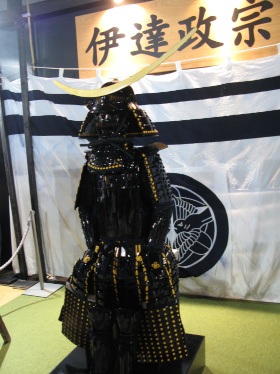

Date Masamune (伊達 政宗, 5 de setembro de 1567 – 27 de junho de 1636) foi um governante regional do período Azuchi-Momoyama do Japão até o início do período Edo . Herdeiro de uma longa linhagem de poderosos daimyō na região de Tōhoku , ele fundou a atual cidade de Sendai . Um excelente estrategista, ele se tornou ainda mais icônico por causa de seu olho perdido, já que Masamune era frequentemente chamado de dokuganryū (独眼竜), ou o "Dragão de Um Olho de Ōshū " . [1] Como guerreiro e líder lendário, Masamune é personagem de vários dramas do período japonês .
Juventude e ascensão
Date Masamune nasceu como Bontenmaru (梵天丸) mais tarde Tojirō (藤次郎), como o filho mais velho de Date Terumune , provavelmente nascido no Castelo de Yonezawa (na moderna Prefeitura de Yamagata ). Aos 14 anos de idade em 1581, Masamune liderou sua primeira campanha, ajudando seu pai a lutar contra o clã Sōma . Em 1584, aos 17 anos, Masamune sucedeu a seu pai, Terumune, que optou por se aposentar de seu cargo de daimyō . O exército de Masamune foi reconhecido por sua armadura preta e capacete dourado.

Armadura de Masamune Date
Masamune é conhecido por algumas coisas que o destacaram dos outros daimyō da época. Em particular, seu famoso capacete com uma lua crescente lhe rendeu uma reputação assustadora. Quando criança, a varíola roubou-lhe a visão do olho direito, embora não esteja claro exatamente como ele perdeu totalmente o órgão. Existem várias teorias por trás da condição do olho. Algumas fontes dizem que ele mesmo arrancou o olho quando um membro sênior do clã apontou que um inimigo poderia agarrá-lo em uma luta. Outros dizem que seu fiel retentor, Katakura Kojūrō, arrancou o olho para ele, tornando-o o "Dragão de Um Olho" de Ōshu.
O clã Date construiu alianças com clãs vizinhos através de casamentos de gerações anteriores, mas as disputas locais permaneceram comuns. Pouco depois da sucessão de Masamune em 1584, um retentor de Date chamado Ōuchi Sadatsuna desertou para o clã Ashina da região de Aizu . Masamune declarou guerra a Ōuchi e aos Ashina por esta traição, e iniciou uma campanha para caçar Sadatsuna. Alianças anteriormente amigáveis foram deixadas de lado quando ele começou a atacar e conquistar as terras dos aliados de Sadatsuna em sua perseguição, até mesmo aqueles de seus parentes em Mutsu e na província de Dewa .
No inverno de 1585, um desses aliados, Nihonmatsu Yoshitsugu, sentiu que a derrota se aproximava e optou por se render ao Date. Masamune concordou em aceitar a rendição, mas com a pesada condição de que os Nihonmatsu entregassem a maior parte de seu território ao Date. Isso resultou no sequestro de Yoshitsugu, Terumune, pai de Masamune, durante seu encontro no Castelo de Miyamori, onde Terumune estava hospedado naquela época. O incidente terminou com Terumune e Yoshitsugu mortos quando o grupo em fuga de Nihonmatsu entrou em confronto com as tropas perseguidoras de Date perto do rio Abukuma .
Devido à morte de Date Terumune pelas mãos de Nihonmatsu Yoshitsugu, Masamune jurou vingança. Em janeiro de 1586, Masamune vingou-se lançando um ataque contra os Nihonmatsu na Batalha de Hitotoribashi . No ano seguinte, Date Masamune mais uma vez atacou Nihonmatsu na Batalha de Koriyama em 1588. O filho de Hatakeyama Yoshitsugu colocou fogo no castelo e fugiu para Aizu . Existem vários registros do evento, embora apresentem relatos diferentes de suas circunstâncias. Em 1589, o clã Date travou muitas batalhas com seus vizinhos, incluindo o Cerco de Kurokawa e a Batalha de Suriagehara contra o clã Ashina . Depois de derrotar o clã Ashina, Masamune fez do Castelo Kurokawa, no domínio de Aizu, sua base de operações. Mais tarde, Masamune lutou no Cerco de Sukagawa e derrotou o clã Nikaidō . No final de 1589, Masamune selou a hegemonia do clã Date sobre o sul da província de Mutsu .
Serviço sob Hideyoshi
Em 1590, Toyotomi Hideyoshi capturou o Castelo de Odawara e obrigou o daimyō da região de Tōhoku a participar da campanha. Embora Masamune inicialmente tenha recusado as exigências de Hideyoshi, ele não teve escolha real no assunto, já que Hideyoshi era o governante virtual do Japão. Masamune ainda atrasou, enfurecendo Hideyoshi. Esperando ser executado, Masamune, vestindo suas melhores roupas e sem demonstrar medo, enfrentou seu furioso senhor. Não querendo mais problemas, Hideyoshi poupou sua vida, dizendo que "Ele poderia ser de alguma utilidade".
Sendo uma grande potência no norte do Japão, Masamune era naturalmente vista com suspeita, como qualquer rival potencial seria visto. Toyotomi Hideyoshi reduziu o tamanho de suas terras após seu atraso em chegar ao Cerco de Odawara contra Hōjō Ujimasa .
Em 1591, Masamune perdeu as terras ancestrais do Clã Date (atual Date City , Kawamata , Koori e Kunimi ) para Hideyoshi, causando tumultos generalizados. Ele nunca recuperou o território.
Depois de lutar contra a Rebelião Kunohe , ele recebeu Iwatesawa e as terras vizinhas como seu domínio natal. Masamune mudou-se para lá, reconstruiu o Castelo de Iwatesawa , rebatizou-o de Iwadeyama e incentivou o crescimento de uma cidade em sua base. Masamune permaneceu em Iwadeyama por 13 anos e transformou a região em um importante centro político e econômico.
Ele e seus homens serviram com distinção nas invasões coreanas de Hideyoshi em 1592-1598.
Serviço sob Ieyasu
Em 1598, após a morte de Hideyoshi, Masamune começou a apoiar Tokugawa Ieyasu — aparentemente a conselho de Katakura Kojūrō . Tokugawa Ieyasu aumentou novamente o tamanho de suas terras, mas suspeitava constantemente de Masamune e de suas políticas. Embora Tokugawa Ieyasu e outros aliados de Date sempre suspeitassem dele, Date Masamune na maior parte serviu lealmente aos Tokugawa.
Em 1600, sob o comando do exército oriental de Tokugawa, ele lutou na Campanha de Sekigahara no Cerco de Shiroishi e no Cerco de Hasedo . Mais tarde, Tokugawa Ieyasu concedeu a Masamune o senhorio do enorme e lucrativo Domínio de Sendai , o que fez de Masamune um dos daimyō mais poderosos do Japão . Tokugawa havia prometido a Masamune um domínio de um milhão de koku , mas, mesmo depois de melhorias substanciais terem sido feitas, a terra produziu apenas 640 mil koku , a maior parte dos quais foi usada para alimentar a região de Edo.
Em 1604, Masamune, acompanhado por 52 mil vassalos e suas famílias, mudou-se para o que era então a pequena vila piscatória de Sendai . Ele deixou seu quarto filho, Date Muneyasu, para governar Iwadeyama. Masamune transformaria Sendai em uma cidade grande e próspera.
Em 1614 e 1615, lutou nas campanhas de Osaka contra o Clã Toyotomi .
Mais tarde, em 1616, quando Tokugawa Ieyasu estava em seu leito de morte, Masamune o visitou e leu para ele um pedaço de poesia Zen . Masamune era altamente respeitado pela sua ética ; um aforismo ainda citado é: "A retidão levada ao excesso se transforma em rigidez; a benevolência indulgenciada além da medida afunda na fraqueza".